Projet Chronos
Plateforme Full-Stack de Gestion Académique (Emplois du Temps & Cartographie Interactive)
Réalisé par


Objectifs du Projet
Dans le cadre des établissements d'enseignement moderne, la planification des cours, la réservation de salles et l'orientation des étudiants représentent des défis organisationnels constants. Le projet Chronos a été conçu comme une réponse technologique complète pour surmonter ces contraintes.
Ses objectifs principaux s'articulent autour de quatre piliers fondamentaux :
Centralisation & Fiabilité
Fédérer toutes les données académiques (utilisateurs, salles, cours, plannings et géolocalisation) au sein d'une unique base de données MySQL hébergée en ligne, éliminant les doublons et les conflits d'emploi du temps.
Sécurité & Rôles (RBAC)
Implémenter un contrôle d'accès strict basé sur les rôles (Administrateur, Professeur, Étudiant, Agent de sécurité), garantissant que chaque acteur n'accède qu'aux informations qui lui sont spécifiquement dédiées.
Stratégie Applicative : Web vs Mobile
Le système Chronos adopte un découpage strict et optimisé selon le terminal de l'utilisateur :
L'Espace Web (Administration)
Le portail web est la tour de contrôle administrative de l'établissement. Il est exclusivement optimisé pour les tâches de saisie, de planification des emplois du temps (via des formulaires avec contrôle de collision) et de modélisation du campus. Il permet à l'administrateur de dessiner les structures physiques du campus sur un éditeur visuel.
L'Application Mobile (Utilisateurs)
L'application mobile (Flutter) est dédiée aux utilisateurs finaux nomades (étudiants, enseignants, agents de sécurité). Pensée pour une utilisation sur le terrain, elle permet de consulter l'emploi du temps en temps réel d'un simple geste tactile et de s'orienter sur le campus grâce à la carte interactive reconstituée dynamiquement.
Fiche Technique & Base de Données
Le projet est structuré en trois tiers découplés : une couche de données MySQL, une couche métier REST en PHP, et une couche de présentation multiplateforme sous Flutter.
| Composant | Technologie | Description / Rôle |
|---|---|---|
|
Base de Données
|
MySQL / MariaDB 11.4 | Hébergée sur Alwaysdata (mysql-chronos.alwaysdata.net), assure le stockage persistant. |
|
Backend & API
|
PHP 8.4 (PDO) | Endpoints RESTful gérant l'authentification Bearer Token et la distribution du JSON. |
|
Frontend Web
|
HTML5 / CSS3 / JavaScript Vanilla | Interface d'administration propre, fluide, sans dépendances lourdes. |
|
Frontend Mobile
|
Flutter 3.x / Dart | Application native compilable pour Android, iOS et terminaux web. |
|
Modélisation de Carte
|
Format JSON (LONGTEXT) | Structure de cellules codée dans la base de données et rendue dynamiquement. |
Le Portail Web d'Administration
Découvrez ci-dessous le fonctionnement détaillé de l'interface d'administration en ligne. Chaque capture d'écran illustre une étape clé de la gestion quotidienne de l'établissement.
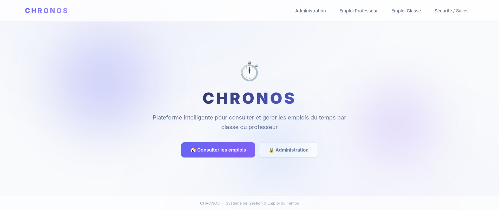
Page d'Accueil Publique
Il s'agit du portail d'entrée principal de Chronos. Les utilisateurs peuvent y sélectionner leur rôle afin de consulter les emplois du temps publics (par classe ou par enseignant), ou accéder à la page de connexion pour l'espace d'administration sécurisé.
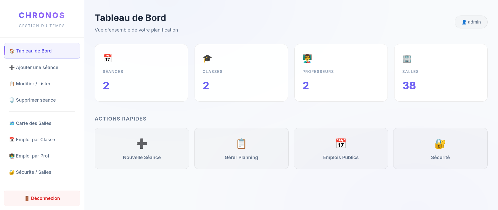
Tableau de Bord Administratif
Une fois connecté, l'administrateur accède à ce centre de contrôle épuré. Il fournit des raccourcis rapides pour ajouter de nouvelles séances de cours, répertorier et éditer les séances existantes, et accéder au module exclusif de cartographie du campus.
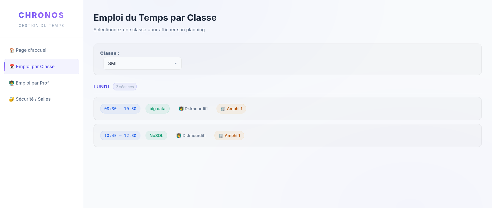
Consultation par Promotion / Classe
Cette grille permet de visualiser l'organisation hebdomadaire complète d'une filière spécifique (par exemple, SIIA ou SMI). L'administrateur peut repérer immédiatement les plages horaires libres et la répartition des matières sur la semaine.
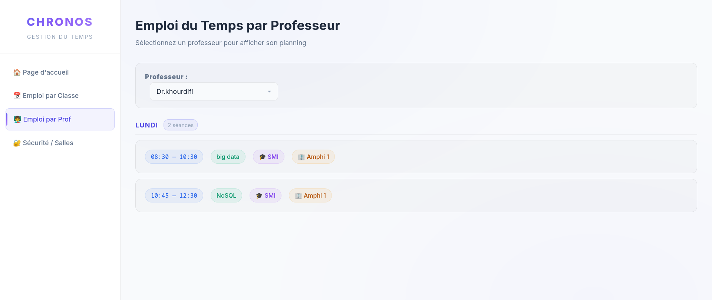
Consultation par Enseignant
Une vue symétrique permettant de filtrer les séances de cours par professeur. Elle s'avère particulièrement utile pour s'assurer qu'un enseignant n'est pas programmé simultanément dans deux salles différentes ou avec deux classes distinctes.
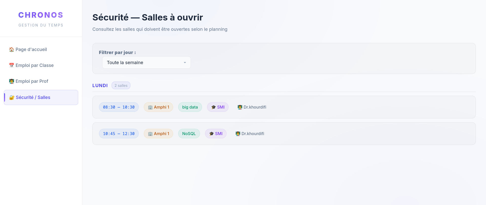
Vue Globale pour les Agents de Sécurité
Cette interface simplifiée montre en temps réel l'occupation actuelle et future de toutes les salles de cours. Les agents de sécurité s'en servent pour planifier les rondes de surveillance et gérer l'ouverture et la fermeture physique des salles.
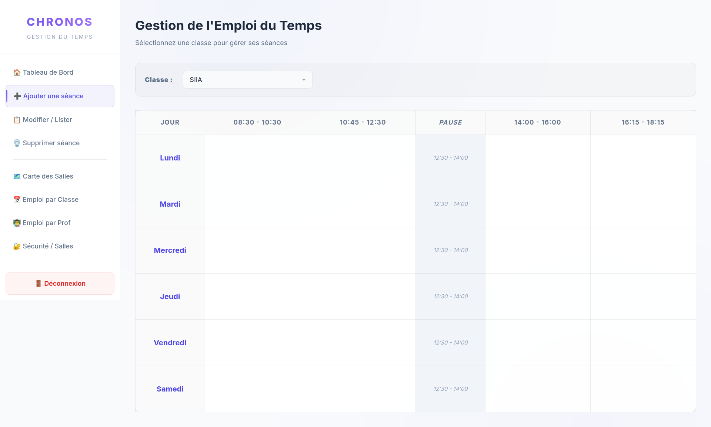
Planification d'un Cours - Étape 1
La première étape du formulaire d'ajout d'une séance demande à l'administrateur de définir les éléments pédagogiques : le choix de l'enseignant, la matière (module) et la promotion cible qui assistera au cours.
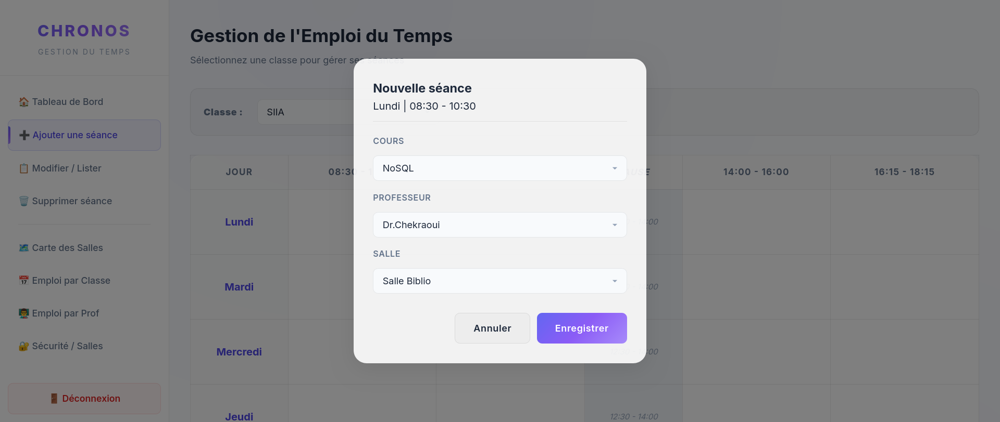
Planification d'un Cours - Étape 2
La deuxième étape concerne les ressources physiques et temporelles. L'administrateur sélectionne le jour, le créneau horaire précis et la salle de cours. À la validation, un algorithme PHP effectue instantanément des contrôles anti-conflits sur la base de données.
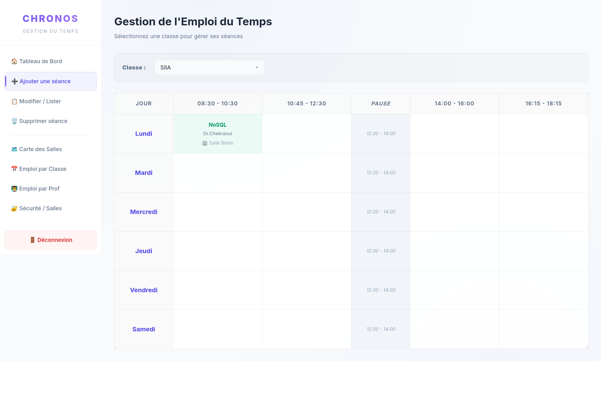
Confirmation de Création
L'interface affiche un récapitulatif détaillé pour validation. Dès que l'administrateur confirme, la séance est enregistrée dans la base MySQL et devient instantanément visible pour les étudiants sur l'application mobile.
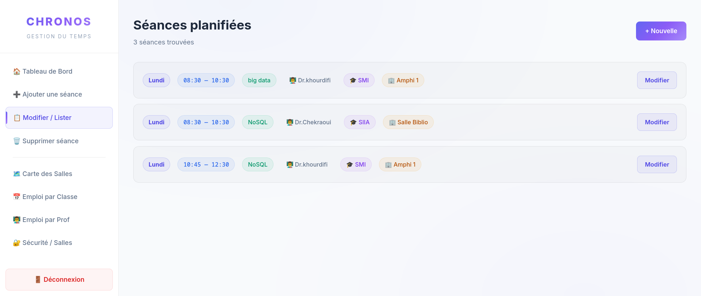
Gestion et Liste des Séances actives
Cette vue répertorie l'intégralité des séances d'emploi du temps enregistrées dans le système. L'administrateur peut y effectuer des recherches rapides ou sélectionner directement une séance pour y appliquer des modifications ou la supprimer.
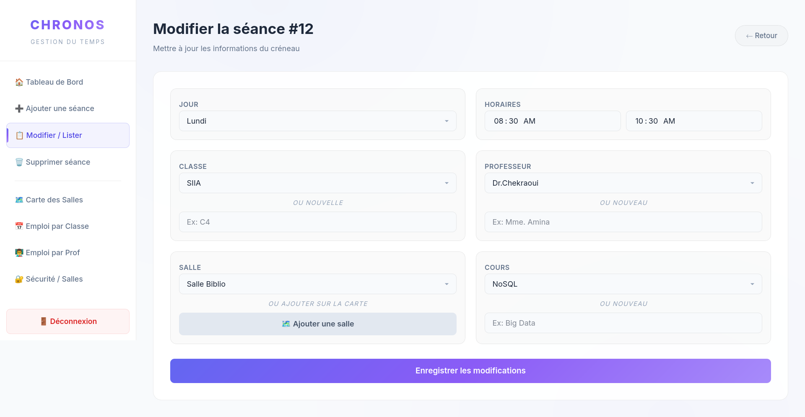
Édition en direct d'une Séance
En cas de contretemps ou de changement de salle imprévu, l'administrateur peut éditer n'importe quel paramètre d'une séance déjà planifiée. Le système applique les mêmes contrôles de collision de données que lors de la création.
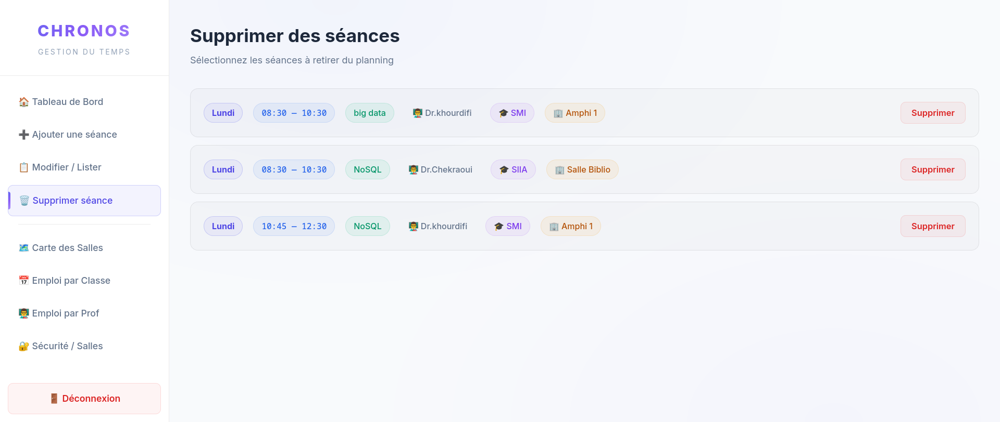
Suppression Sécurisée
Avant d'effacer définitivement un cours de la planification, l'administrateur doit passer par cet écran de validation pour éviter toute suppression accidentelle. La suppression libère instantanément le créneau et la salle pour d'autres plannings.
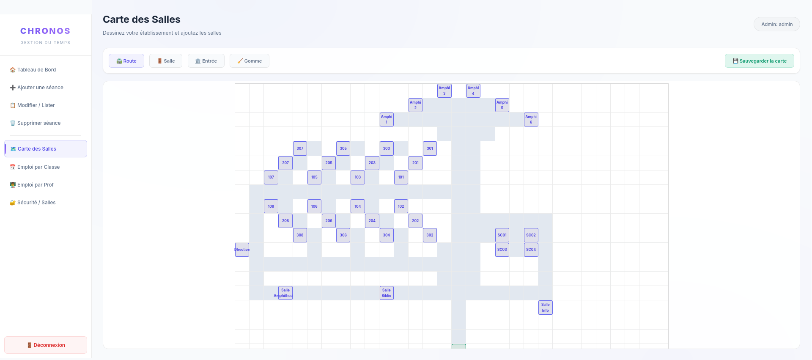
Éditeur de Carte Interactive
Cette interface innovante permet à l'administrateur de modéliser le campus en dessinant directement sur une grille 2D. Il peut placer des salles (bleu), des routes/couloirs (gris) et des entrées (vert). Les cellules sont converties en une structure JSON sérialisée en base de données.
L'Application Mobile
Conçue avec Flutter, l'application mobile est l'outil quotidien des étudiants, enseignants et agents de sécurité. Elle interroge l'API REST pour afficher des données actualisées en temps réel.
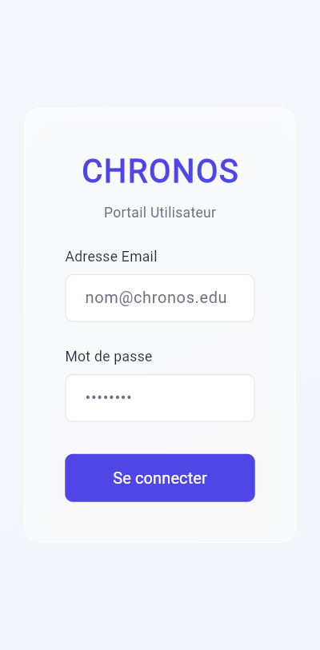
Connexion Sécurisée
Interface épurée de connexion. Après saisie des identifiants, le mobile reçoit un jeton de sécurité Bearer Token valide pour une durée de 24 heures.
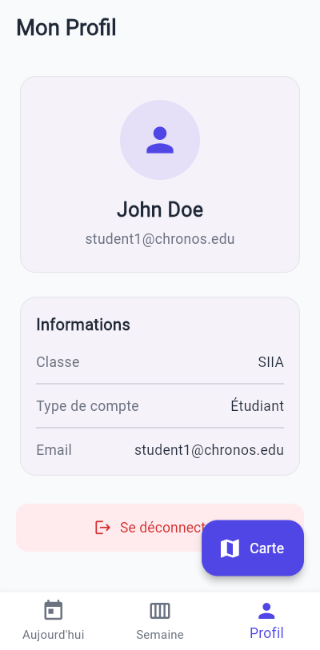
Profil Utilisateur
Affiche le nom, l'adresse email, le rôle au sein de l'établissement (Étudiant, Professeur ou Sécurité) et la promotion d'appartenance.
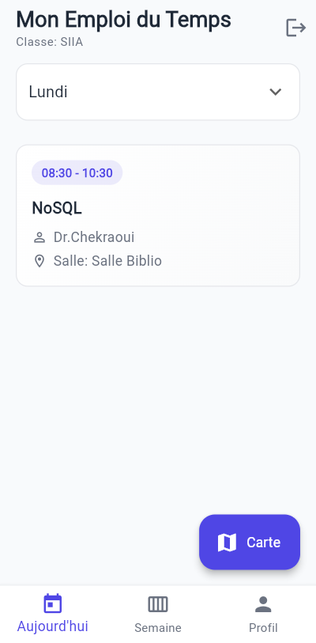
Planning Journalier
Permet à l'étudiant ou à l'enseignant de consulter chronologiquement la liste des séances prévues pour la journée en cours avec horaires et salles.
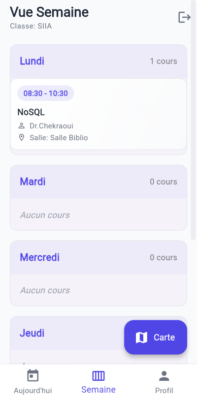
Planning Hebdomadaire
Offre une vision globale de l'agenda de la semaine. L'utilisateur peut faire glisser l'écran pour anticiper son emploi du temps des jours à venir.
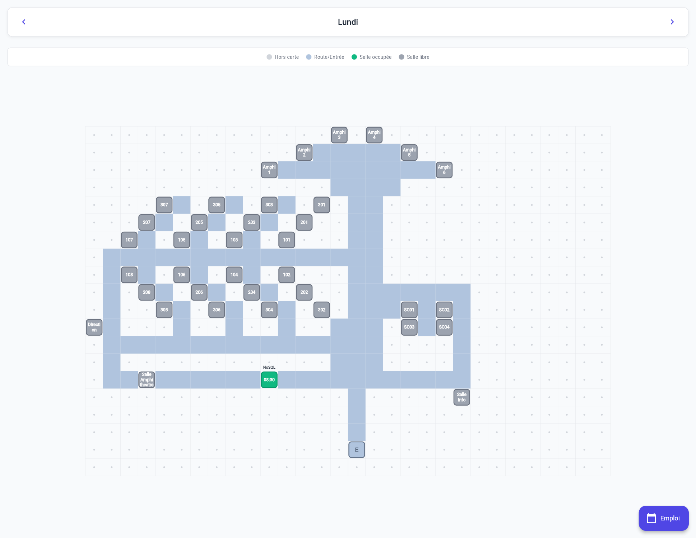
Carte du Campus — Navigation Globale
Cette interface charge et compile le layout JSON dessiné par l'administrateur sur le web. Elle génère une carte tactile zoomable et défilable en temps réel, permettant à l'utilisateur de visualiser la structure du campus en un clin d'œil.
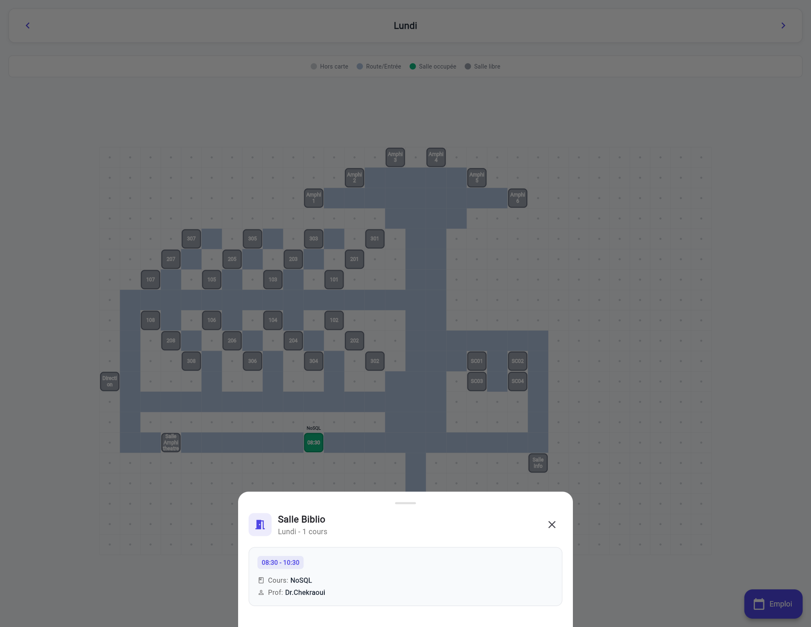
Carte du Campus — Localisation de Salle
Les salles de classe sont étiquetées avec leurs noms spécifiques (ex : Salle Info, Salle Biblio, SC01). En glissant sur la carte tactile, l'étudiant repère précisément la salle où doit se dérouler son prochain cours, facilitant ainsi son orientation.
Conclusion & Perspectives
Le projet Chronos démontre avec succès l'utilité d'une architecture client-serveur pour découpler la logique administrative (Web) de l'utilisation pratique nomade (Mobile). L'échange fluide de données via une API REST sécurisée et la cartographie interactive dessinée à la main offrent une flexibilité et un confort d'utilisation sans égal.
Parmi les évolutions envisagées pour le futur, nous prévoyons l'implémentation d'une base de données locale (SQLite) pour permettre un mode hors-ligne complet sur mobile, l'intégration de notifications push en cas de changement de planning de dernière minute, et le chiffrement strict des données de connexion (HTTPS/JWT).